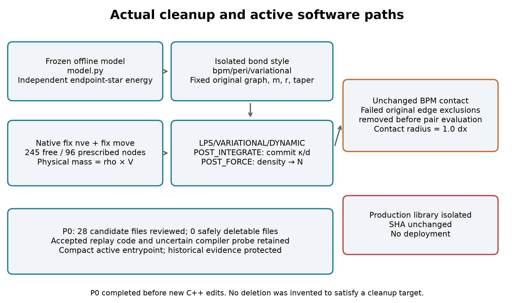
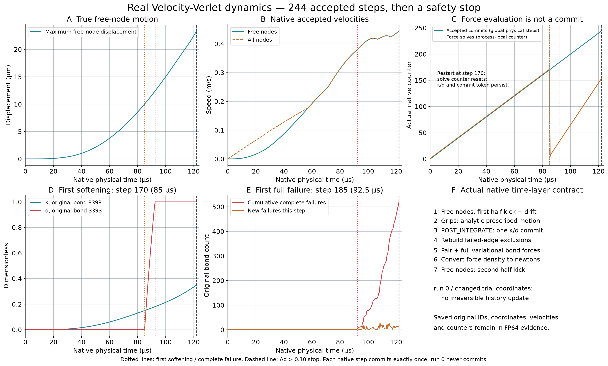
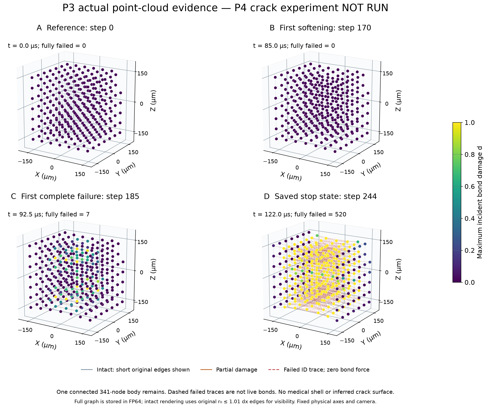
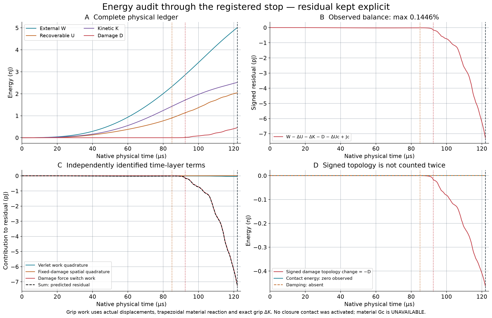
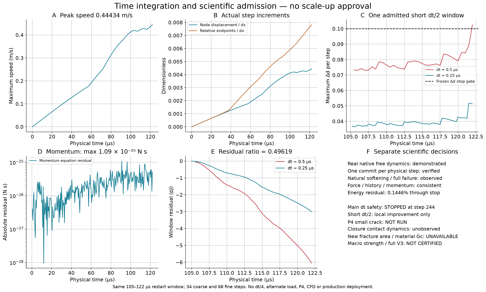

已完成隔离C++接入和341点真实自由积分。主工况在244步、122µs因单步损伤增量超过冻结0.10门槛停止；自然首软化85µs、首失效92.5µs，累计520条失效键。限定窗口dt/2局部改善，不能代替全程认证。P4未运行，材料Gc、宏观强度和生产V3未认证。
中文51项报告 · 分项状态P0先行审计28个文件，安全删除0个。新协调fix只位于本轮隔离源码，保留原自由能、参考图及1.0dx接触。
SVG
真实0–122µs主时程。首次软化85µs；首次完全失效92.5µs；第244步因Δd=0.10255停止，未达到预注册700µs终点。
SVG
P4未执行；本图仅展示真实341点P3保存态。为可读性，完整键背景只画r0≤1.01dx子集，损伤/失效原键全部显示。节点颜色为最大邻接d，不把损伤云画成连续裂面。
SVG
外功、完整变分储能、物理动能、损伤耗散与带符号拓扑项分别展示；残差由Verlet功求积、固定损伤空间求积和损伤后力切换项重建，不归入耗散。
SVG
真实损伤增量触发停止；唯一dt/2窗口使最大Δd减半、局部能量残差约减半。主时程未完成，因此不得据此准入P4或大规模材料标定。
SVG